TDSAT: System Design for a Digital Tribunal
Moving beyond "Dashboard Design" to architect a DPDPA-compliant Role-Based Access System. We engineered an object-oriented data model that handles the complexity of legal filing, scrutiny loops, and judgment delivery.

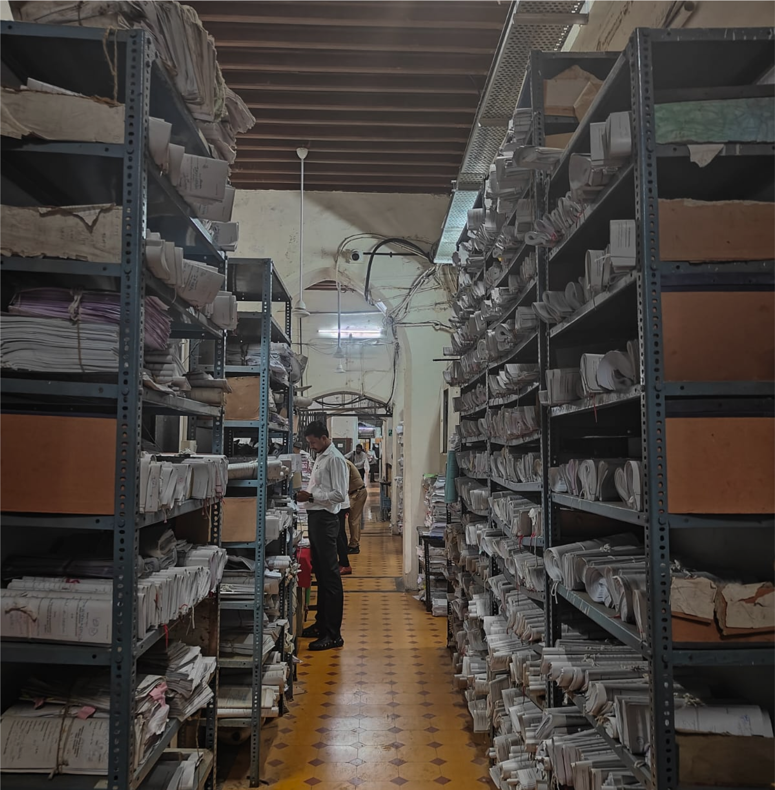
Modernizing TDSAT: The Constraints
The Telecom Disputes Settlement and Appellate Tribunal (TDSAT) required a digital overhaul to handle Telecom, Broadcasting, and Cyber disputes. However, this wasn't a blue-sky project. We had two strict directives:
"The E-Filing software must be functionally similar to the system presently used by the Delhi High Court."
Why? To ensure familiarity for Advocates who are already accustomed to that workflow.
"Upgrade the current Case Information System (CIS) software."
The backend required a complete re-architecture to handle Notices, Masters, and Bench creation.
My Role: I worked as the sole UX Owner of the project, translating complex judicial workflows into a seamless, DPDPA-compliant digital ecosystem.
The Lifecycle of a Dispute
Before designing screens, we mapped the linear progression of a case from the perspective of an Advocate/Party-in-Person.
(Or on behalf of client)
Evidence & Annexures
Court Fees
Date Allocation
Final Order
How I solved the big problem and increase efficiency by 80%?
Before intervention, the TDSAT filing process was a rigid, linear relay race. A petition involves multiple supporting documents and a court fee receipt. Once submitted to the Clerk (who generates a Diary Number), the file enters a deep scrutiny hierarchy.
System Constraint: The file moves strictly up this chain. If an officer is marked "On Leave," the system logic skips to the next level. However, if the entire chain is absent (leaving only the Dealing Assistant), the workflow deadlocks.
Redundant Resubmission
When a single document (e.g., an Affidavit) was flagged as incorrect, the legacy system rejected the entire case file. The petitioner received a vague notification and had to re-parse and re-upload every single document, even the valid ones. This lack of granularity shifted the burden of due diligence entirely onto the user.
Loss of Scrutiny Context
Once a file was resubmitted, it was treated as a "Fresh Case." The specific notes from the Desk Officer or Registrar were lost in the reset. The Admin team was forced to re-verify all documents from scratch to ensure no new errors were introduced, doubling their workload.
Fix 01: Atomic File Locking
We introduced Immutable States on the E-filing portal. If a document is flagged (e.g., "Defect"), the system "locks" all valid files. The user can only edit the specific defective file. This prevents accidental changes to the rest of the petition and gives the user real-time status updates.
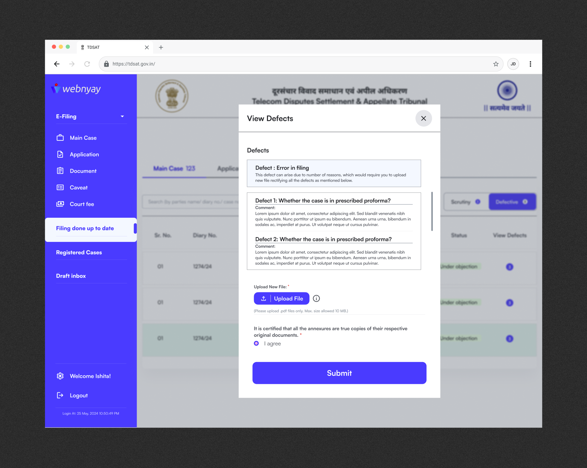
Fix 02: Persistent Timeline
We built a Visual Audit Trail on the Admin Portal. It preserves the "Chain of Authority," displaying exactly how the file traveled and who flagged the error. Officers can now see previous notes and focus their re-check exclusively on the "Delta" (the changed file).
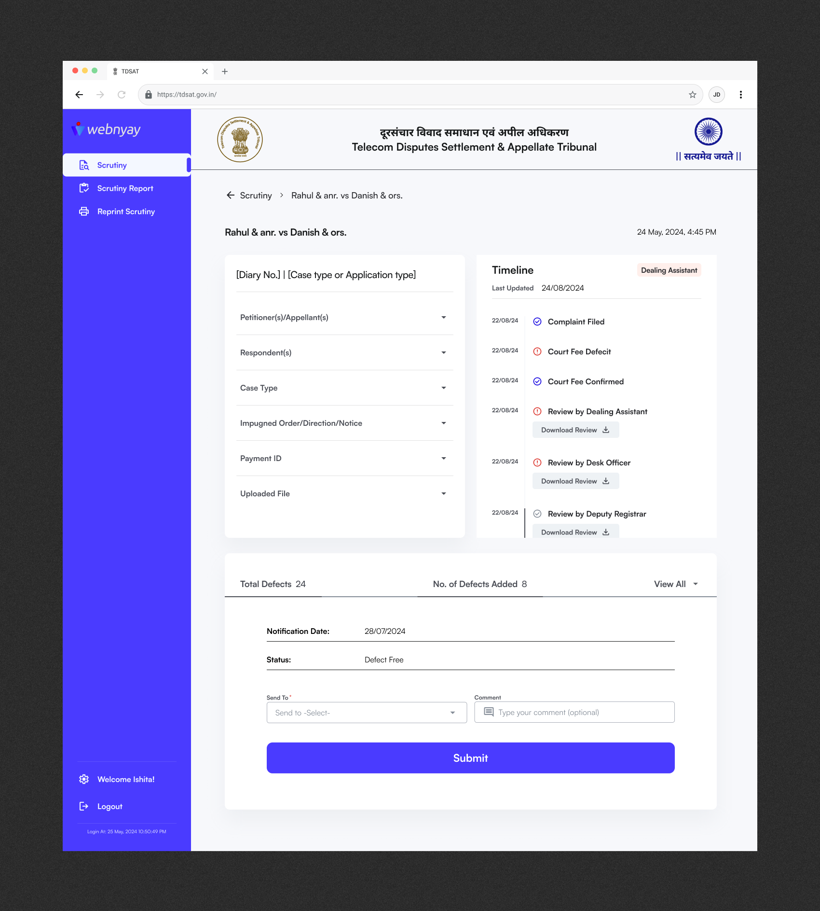
Shifted from Repetition to Precision.
By allowing admins to review only the corrected defects ("The Delta") rather than the full docket, we eliminated the major bottleneck in the registry workflow.
Designing for Context
Throughout the project, I treated every touchpoint as part of a single experience rather than separate screens.
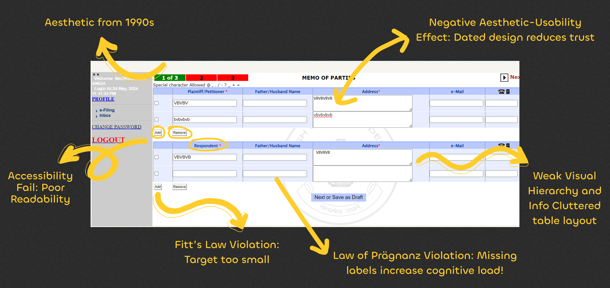
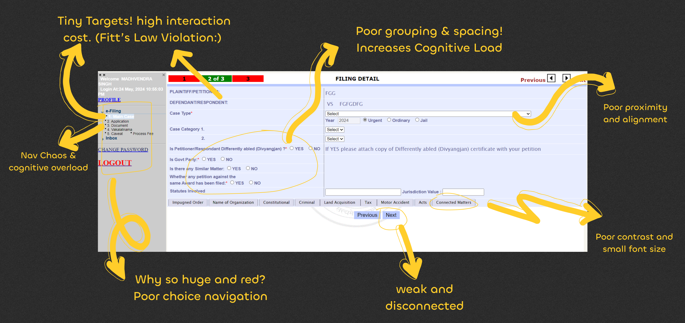
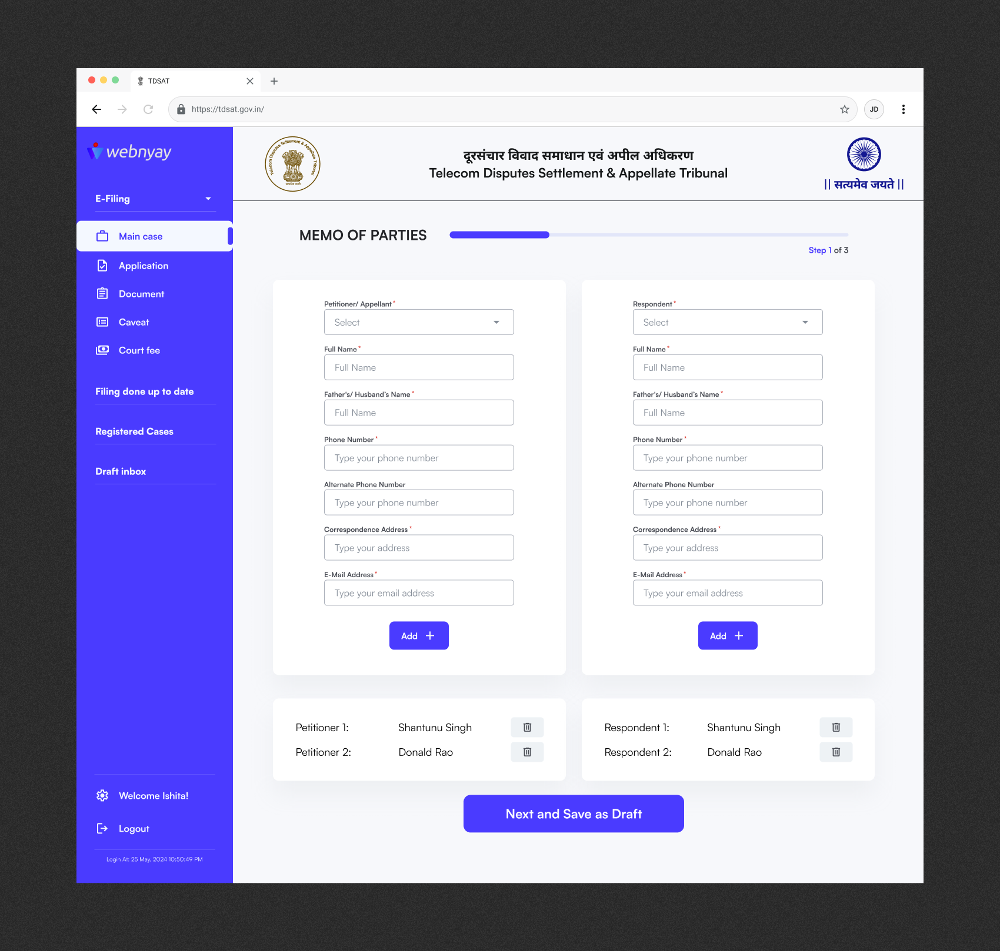
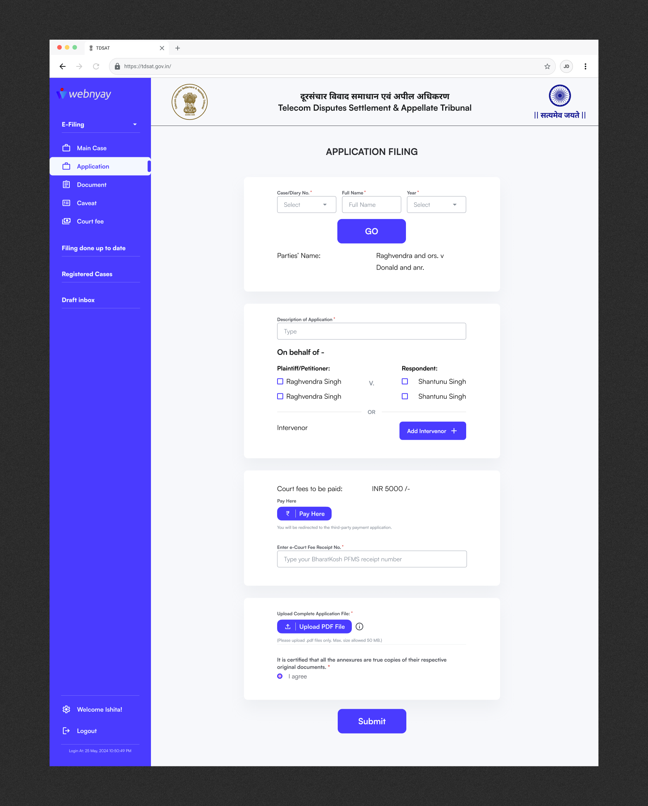
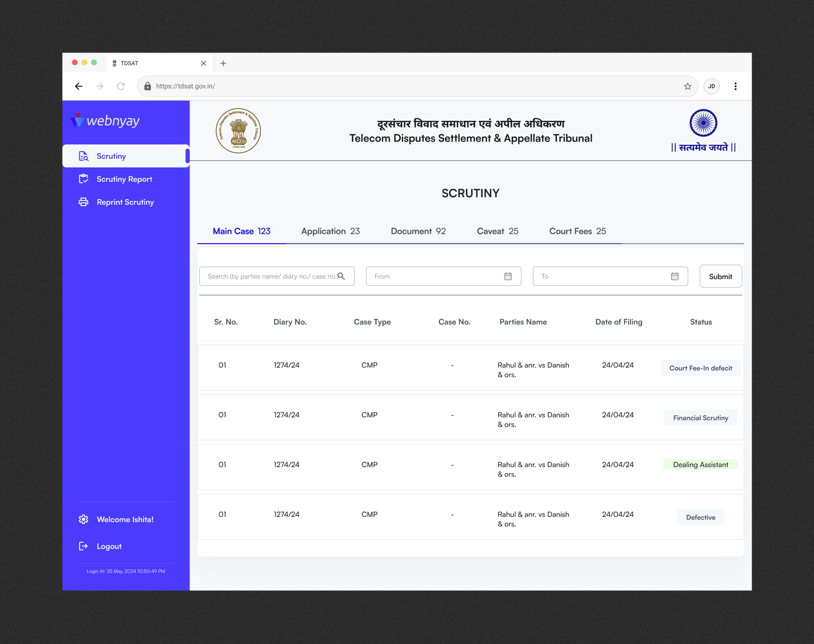
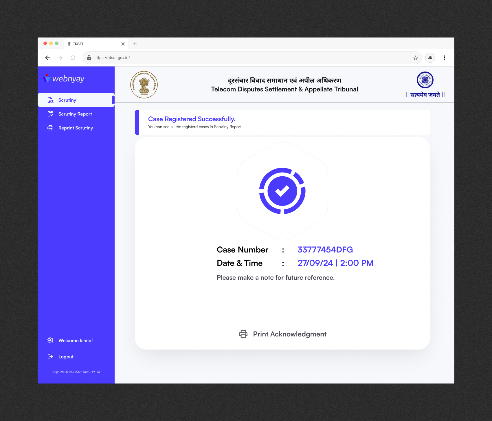
Upgraded CIS Portal
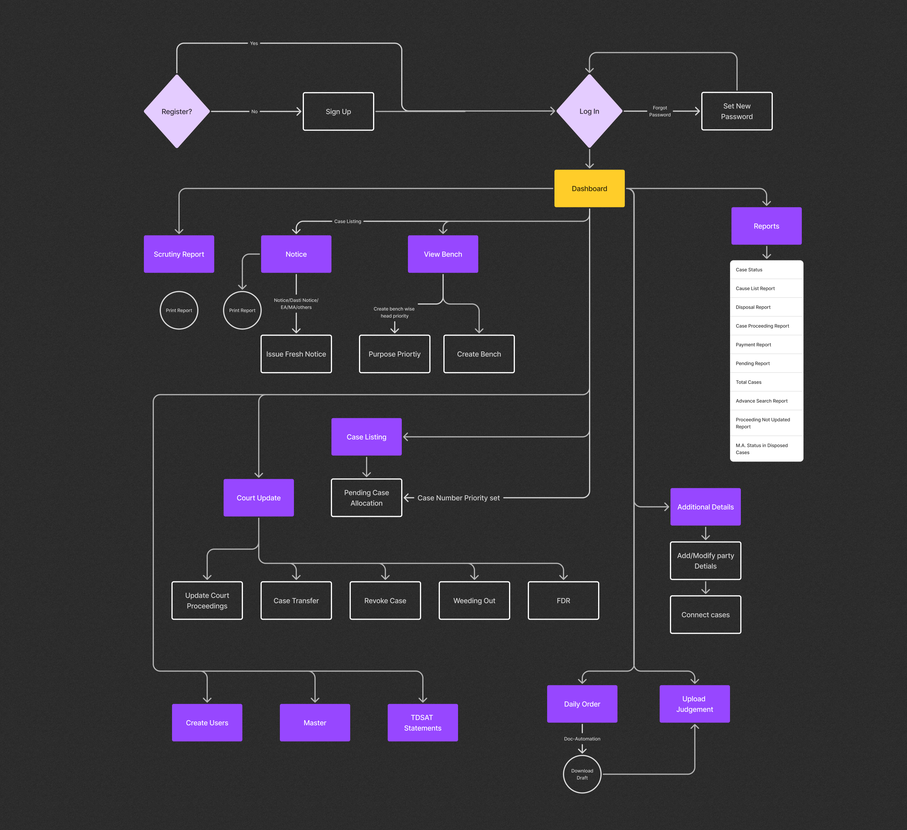
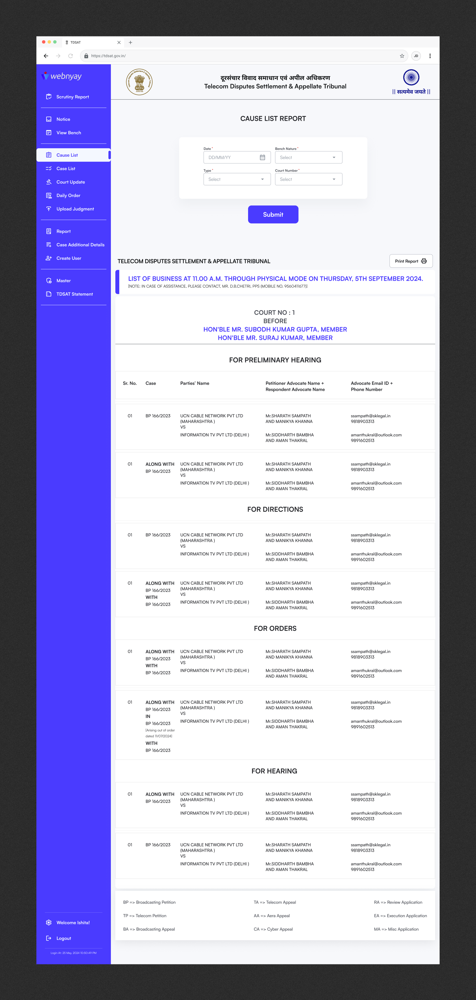
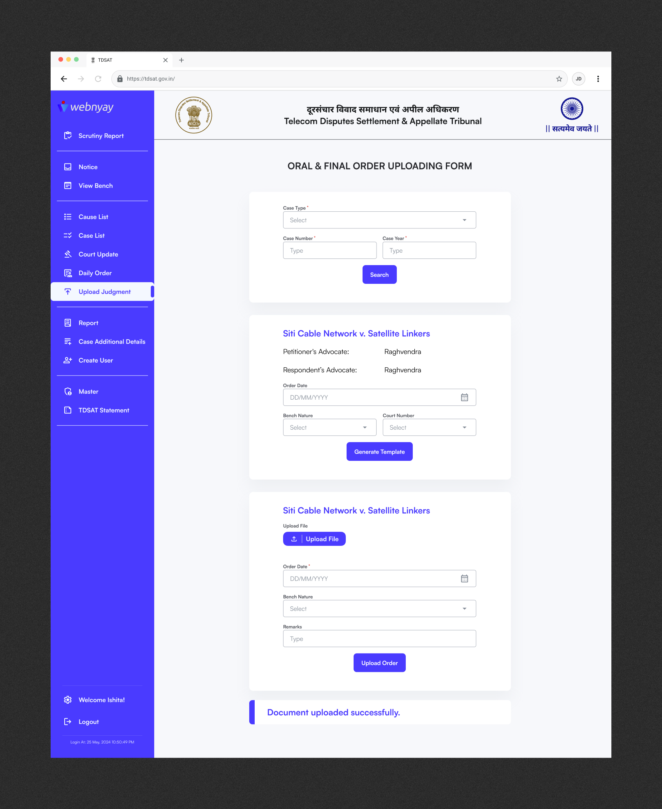
Projected Outcomes
From 45–60 minutes of manual filing to ~15–20 minutes with guided, validated flows.
Automated validation and checklists reduce incomplete or non-compliant filings.
Dedicated Admin Portal and structured defect workflows cut scrutiny cycles by one fifth.
Automated fee calculation and digital records minimise human error in fees and filings.
Replaced by real-time dashboards and automated notifications on case status.
Aligned with DPDPA’s digital office mandate and tribunal data governance needs.
In a single line for decision-makers:
The new ecosystem is projected to reduce filing time by 65%, cut defects by 90%, increase scrutiny
efficiency, and deliver full real-time transparency — while meeting DPDPA’s digital tribunal
requirements.
Designing Justice Infrastructure
This project pushed me to think like a Systems Architect. I learned that in legal tech, "good design" isn't about minimalism—it's about clarity in complexity. By respecting the data structure (OOUX) and the workflow realities (Service Blueprint), we built a system that doesn't just look modern, but actually works for the people administering justice.
Let's talk.
Have a project in mind? Send me a message and I'll get back to you within 24 hours.